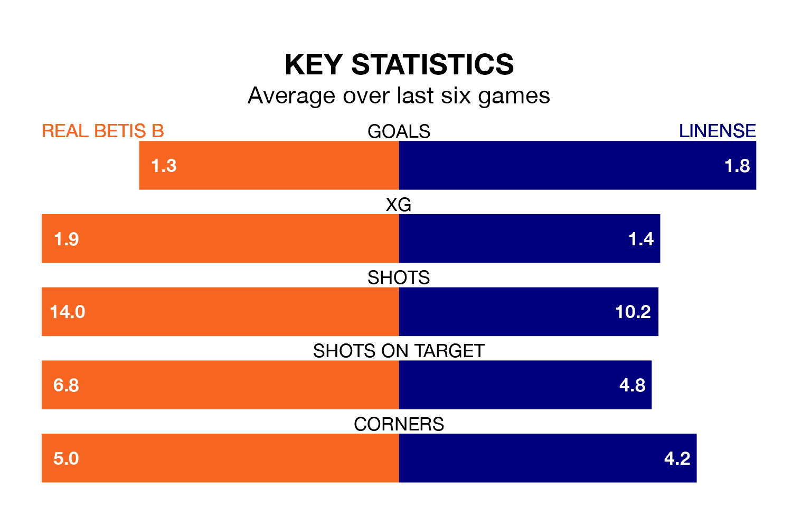

Real Betis B face Linense on Sunday seeking to protect their long unbeaten run in Segunda División RFEF Group 4.
Betis B are unbeaten in six, with two wins and four draws, ahead of the 10.30am kick-off.
They face a Linense team who have won four and lost two over the same number of games.
With 25 goals in 18 games so far this season, Betis B are the league's second-highest scorers with 1.4 goals per game. And they are conceding at an average rate, letting in 18 goals at a rate of 1.0 per game.
Linense are also above average scorers, with 1.2 goals per game, compared to a league average of 1.0. They have conceded 0.9 goals per game.
In the last 10 years, Betis B and Linense have played each other on nine occasions. Betis B won two of them, Linense five, and they drew twice.
On average, Betis B scored 1.2 goals and Linense 1.7 in those matches.
Their last meeting was on September 10, when they played out a 1-1 draw.
The visitors are sixth in the table after 18 games, of which they have won eight and drawn five, earning 29 points.
The home side are one place behind Linense in seventh, with six wins and eight draws putting them on 26 points.
Betis B's last match was on January 13, a 1-1 draw against Cádiz B.
Linense beat La Unión Atlético 2-1 last time out, on Sunday.
Updated: 13:09 (UTC), 17/01/24